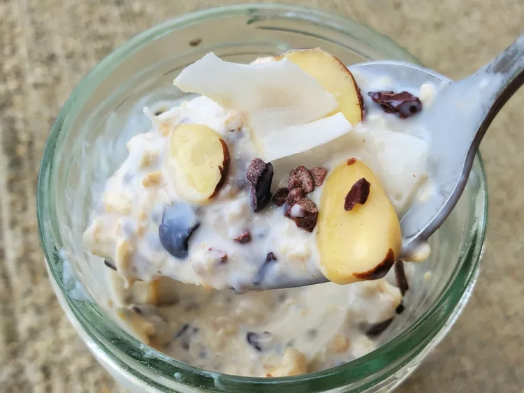

Coconut Overnight Oats

About
These creamy coconut overnight oats have a great flavour and
a boost of protein from Greek yogurt and chia seeds. I topped
them with cacoa nibs and almonds, but feel free to use fresh fruit
or any other topping. Add honey or maple syrup if you like them sweeter
Ingredients
- 1/3 cup of old-fashioned oats
- 1/3 cup coconut milk beverage
- 1/4 cup nonfat vanilla Greek yogurt
- 1/2 tablespoon chia seeds
- 1 1/2tablespoons unsweetened shredded coconut,divided
- 1/2 tablespoon cacao nibs
- 1/2 tablespoon sliced almonds
Steps
- Combine oats, coconut milk beverage,Greek yogurt, chia seeds
and 1 tablespoon coconut flakes in an 8-ounce Mason jar
. Stir until well combined, and cover with a lid. Refrigerate for 8
hours, or overnight.
- Top with 1/2 tablespoon coconut flakes,cacao nibs and almond
flakes when ready to serve. Stir and enjoy.